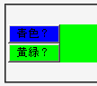
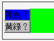

button要素の背景色にtransparentを指定しても、親要素の背景色を継承せずにOpera既定の色（銀色）になる。
<form action="#" style="background:lime;"> <button type="button" style="background:blue;">青色？</button><br> <button type="button" style="background:transparent;">黄緑？</button> </form>
上のボタンは具体的な色を指定した場合、下のボタンは親要素の色を継承させた場合です。
WinIE6.0での表示
Opera6.05での表示
Opera6.05では不具合の発生が確認されました。Opera7.0では標準・互換モードともに不具合の発生は確認されませんでした。